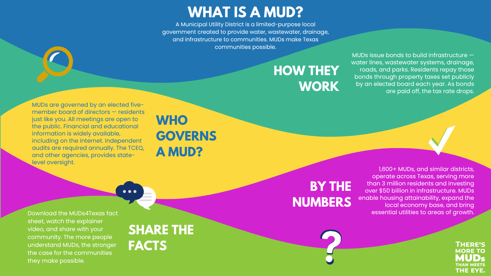

6
DESIGN_VARIANCE
Expressive civic editorial. Asymmetric layouts, typographic heroes, table craft. Not experimental theatre.
Texas civic education brand: warm authority without realtor flash, dark SaaS, or generic AI civic cards. Mode: Read. Stack: static HTML + Tailwind CDN + Lucide + Google Fonts.
Locked for Phase 1 education Read mode. Do not drift without Kenny sign-off.
6
Expressive civic editorial. Asymmetric layouts, typographic heroes, table craft. Not experimental theatre.
2
Hover and focus only. No scroll theatre, no GSAP. Respects prefers-reduced-motion.
5
Scannable education: steps, tables, FAQ folds. Breathing room between sections. Not dashboard-dense.
Cool capitol stone ground (not AI cream wall). Deep civic navy for authority. Adobe clay for rare emphasis. Mesquite sage for secondary calm. Surfaces are cool off-whites, never pure #FFFFFF as the only canvas.
ground
#E6E9E4 · page canvas
paper
#F7F8F6 · bands
surface
#FCFDFB · cards / header
ink
#0B1726 · text / footer
civic
#1B4F72 · primary CTA
clay
#C45C26 · rare accent
mesquite
#2F4F44 · secondary
muted
#4A5560 · body secondary
Anti-clone: Not Air Solutions amber (#D97706) or IBM Plex. Not Hufflin’s Fraunces / forest / teal. Not purple-blue gradients.
Newsreader for display and section heads. Source Sans 3 for UI and body. Strong scale steps. No kickers or eyebrows above headings (craft-floor ban).
Display · Newsreader · clamp(2.5rem, 5vw, 3.75rem)
Texas Municipal Utility Districts
H1 · Newsreader · clamp(2.5rem, 5vw, 3.75rem)
H2 · Newsreader · clamp(1.625rem, 2.8vw, 2.125rem)
H3 · Source Sans 3 semibold · 1.125rem
Body · Source Sans 3 · 1.125rem · leading 1.65 · measure 65–75ch
A Municipal Utility District (MUD) is a political subdivision of the State of Texas created to provide certain public services, most often water, wastewater, and drainage, within defined boundaries.
Primary = civic navy. Clay reserved for official external tools (TCEQ, tax). Never lead-gen CTAs. Use .cta-row so buttons stack full-width under 480px (min-height 44px).
Education only
Not legal, tax, or financial advice. Confirm with your district and licensed professionals.
They can overlap
A property can have a MUD, a PID, and an HOA at the same time.
A Municipal Utility District (MUD) is a special-purpose local government in Texas that often provides water, sewer, drainage, and related services in growing communities.
Locked Option A wordmark (Kenny/Kyle). Rejected live pictorial marks archived below — do not use as site chrome.
logo-muds4texas.svg header / light — LOCKED Option Alogo-muds4texas-on-dark.svg footer / ink — LOCKED
logo.png rejected live mark / archivelogo-white-type.png rejected live / archive
homepage-numbers-banner.png
factsheet-infographic.png What is a MUD
Also in use: hero-muds-background.png for atmospheric heroes with ink scrim (WCAG AA text).
Missing from client: dark-ink horizontal “MUDs 4 Texas” wordmark for light headers. Current chrome uses text wordmark + logo on ink chip.